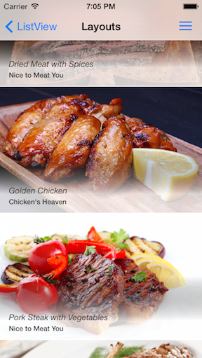
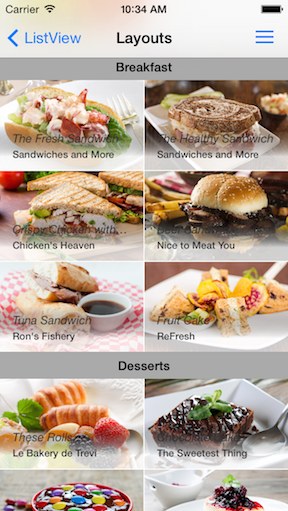

ListView: Layouts
TKListView provides the same layout mechanism as UICollectionView. There are three implemented layouts and you can also create your own by inheriting from UICollectionViewLayout class. However, all list view features will be available only when using a layout which inherits from TKListViewLinearLayout.
Getting started
By default TKListView will use TKListViewLinearLayout but you can easily change that with the layout property. The layouts that are implemented are:
- Linear - the default layout which orders items in a simple list.
- Grid - lays out items in a grid.
- Staggered - lays out items in a staggered grid formation.
Each of these layouts can layout items in either horizontal or vertical direction. Here is one example of setting grid layout with two columns and horizontall scroll direction.
Objective-C
TKListViewGridLayout *layout = [TKListViewGridLayout new];
layout.spanCount = 2;
layout.scrollDirection = TKListViewScrollDirectionHorizontal;
listView.layout = layout;
Swift
let layout = TKListViewGridLayout()
layout.spanCount = 2
layout.scrollDirection = TKListViewScrollDirection.Horizontal
listView.layout = layout
Linear layout
In linear layout cells are distributed in a simple list horizontally or vertically depending on the selected scroll direction.

Objective-C
TKListViewLinearLayout *layout = [TKListViewLinearLayout new];
layout.itemSpacing = 4;
layout.itemSize = CGSizeMake(100, 100);
listView.layout = layout;
Swift
let layout = TKListViewLinearLayout()
layout.itemSpacing = 4
layout.itemSize = CGSizeMake(100, 100)
listView.layout = layout
Cells can be aligned (left, right, center, stretch) by setting the itemAlignment property:
Objective-C
layout.itemAlignment = TKListViewItemAlignmentCenter;
Swift
layout.itemAlignment = TKListViewItemAlignment.Center
Grid layout
The grid layout allows for distributing cells in a fixed number of columns/rows. The grid layout inherits from TKListViewLinearLayout, therefore all properties of TKListViewLinearLayout are also available in TKListViewGridLayout.

Objective-C
TKListViewGridLayout *layout = [TKListViewGridLayout new];
layout.itemSize = CGSizeMake(100, 100);
layout.itemSpacing = 0;
layout.lineSpacing = 0;
layout.spanCount = 2;
listView.layout = layout;
Swift
let layout = TKListViewGridLayout()
layout.itemSize = CGSizeMake(100, 100)
layout.itemSpacing = 0
layout.lineSpacing = 0
layout.spanCount = 2
listView.layout = layout
Staggered layout
The staggered layout lays out items in a staggered grid formation. The It supports horizontal & vertical layout as well as an ability to align cells. It inherits from TKListViewGridLayout.
Staggered layout lays its items based on their size. The item size is determined by using the staggeredLayout:sizeForItemAtIndexPath: method of TKListViewStaggeredLayoutDelegate protocol:
Objective-C
- (CGSize)staggeredLayout:(TKListViewStaggeredLayout *)layout sizeForItemAtIndexPath:(NSIndexPath *)indexPath
{
if (layout.scrollDirection == TKListViewScrollDirectionVertical) {
return CGSizeMake(100, [_sizes[indexPath.row] floatValue]);
}
else {
return CGSizeMake([_sizes[indexPath.row] floatValue], 100);
}
}
Swift
func staggeredLayout(layout: TKListViewStaggeredLayout!, sizeForItemAtIndexPath indexPath: NSIndexPath!) -> CGSize {
if layout.scrollDirection == TKListViewScrollDirection.Vertical {
return CGSizeMake(100, sizes[indexPath.row]);
}
else {
return CGSizeMake(sizes[indexPath.row], 100);
}
}
Staggered grids are likely to have gaps at the edges of the layout. To avoid these gaps, set the alignLastLine property to YES.
Objective-C
TKListViewStaggeredLayout *layout = [TKListViewStaggeredLayout new];
layout.itemSpacing = 1;
layout.lineSpacing = 1;
layout.spanCount = 2;
layout.alignLastLine = YES;
layout.delegate = self;
listView.layout = layout;
Swift
let layout = TKListViewStaggeredLayout()
layout.itemSpacing = 1
layout.lineSpacing = 1
layout.spanCount = 2
layout.alignLastLine = true
layout.delegate = self
listView.layout = layout